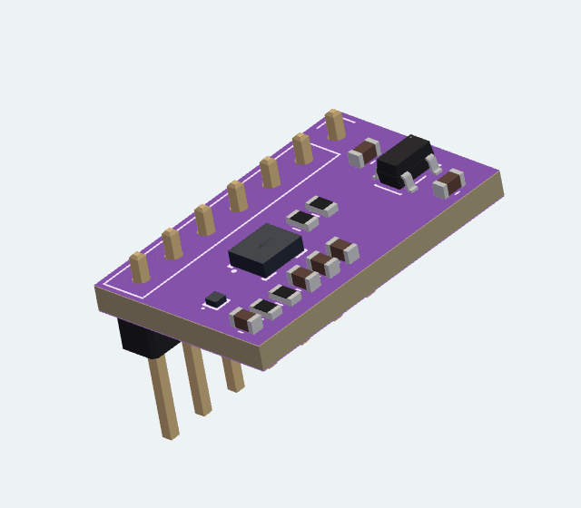

Arduinov0.2.1
Arduino AVR · Wire
Acceleration and angular-rate examples Download ZIP9-axis inertial and magnetic sensor module
One board for acceleration, angular-rate and magnetic-field measurements in robotics, embedded data acquisition and motion logging.

The ranges listed are the sensor IC full-scale values. See the datasheet for pin assignment, electrical connections and integration.
Use the datasheet for electrical connections and measurement specifications. Select a software package for your platform.
PDF · English and Turkish · Rev C
The I²C examples cover acceleration and angular-rate data. Board-level validation of magnetic measurements and simultaneous nine-axis output is in progress.
Arduino AVR · Wire
Acceleration and angular-rate examples Download ZIPTeensyduino 4.x · Arduino/Wire based
Integration preview Download ZIPESP32 Arduino core · I²C example
Integration preview Download ZIPSTM32Cube HAL · 6-axis driver
Integration preview STM32duino package Download ZIP